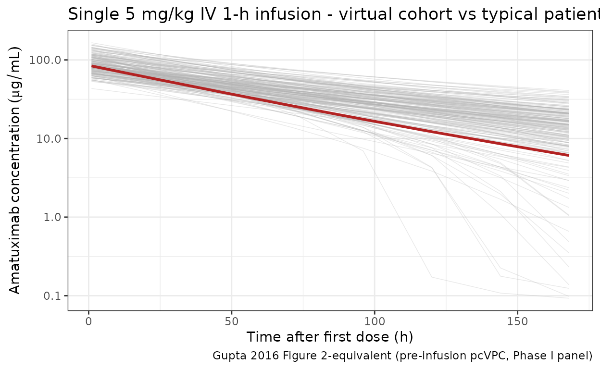
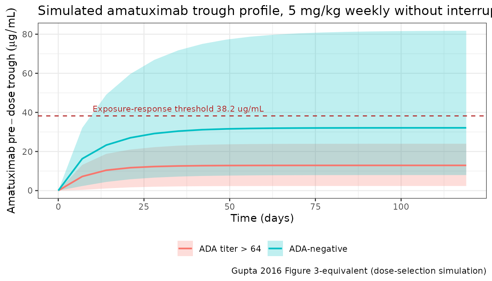

Gupta_2016_amatuximab
Source:vignettes/articles/Gupta_2016_amatuximab.Rmd
Gupta_2016_amatuximab.Rmd
library(nlmixr2lib)
library(rxode2)
#> rxode2 5.0.2 using 2 threads (see ?getRxThreads)
#> no cache: create with `rxCreateCache()`
library(PKNCA)
#>
#> Attaching package: 'PKNCA'
#> The following object is masked from 'package:stats':
#>
#> filter
library(dplyr)
#>
#> Attaching package: 'dplyr'
#> The following objects are masked from 'package:stats':
#>
#> filter, lag
#> The following objects are masked from 'package:base':
#>
#> intersect, setdiff, setequal, union
library(tidyr)
library(ggplot2)Amatuximab population PK replication (Gupta 2016)
Gupta et al. (2016) characterised amatuximab (MORAb-009) pharmacokinetics in 199 patients across four clinical studies (two Phase I dose-escalation studies in advanced mesothelin-expressing tumours, a Phase II pancreatic cancer study, and a Phase II malignant pleural mesothelioma [MPM] study). The final PK model is a two-compartment structure with parallel linear and Michaelis-Menten (saturable) elimination from the central compartment. Covariate analysis retained body weight on the central volume (power effect, reference 70 kg) and antidrug-antibody (ADA) positivity at a titer threshold > 64 on linear clearance (multiplicative effect of 1.49).
This vignette documents the parameter provenance in a source-trace table, builds a virtual cohort matching Gupta 2016 Table 1, simulates the 5 mg/kg weekly (without interruption) regimen evaluated in the paper’s dose selection analysis, and validates the simulated NCA against the observed Study 003 median Cmin and the published PK characteristics.
- Citation: Gupta A, Hussein Z, Hassan R, Wustner J, Maltzman JD, Wallin BA. Population pharmacokinetics and exposure-response relationship of amatuximab, an anti-mesothelin monoclonal antibody, in patients with malignant pleural mesothelioma and its application in dose selection. Cancer Chemother Pharmacol. 2016;77(4):733-743.
- Article: https://doi.org/10.1007/s00280-016-2984-z
Population studied
Gupta 2016 Table 1 (pharmacokinetic-analysis database, N = 199):
| Field | Value |
|---|---|
| N subjects | 199 |
| N studies | 4 (US Phase I, Japanese Phase I, Phase II pancreatic, Phase II MPM) |
| Age | 33-90 years (mean 64.5, median 65, SD 9.55) |
| Body weight | 35-134 kg (mean 75.1, median 74, SD 16.4) |
| Baseline serum albumin | 2.38-5.46 g/dL (mean 3.80, SD 0.53) |
| Sex | 128 M / 71 F (35.7% female) |
| Race | Caucasian 81.4%; Japanese 8.54%; Other 8.04%; missing 2.01% |
| ECOG performance status | 0 (59.8%); 1 (39.2%); 2 (1%) |
| Typical regimen (MPM) | 5 mg/kg IV on Days 1 and 8 of each 21-day cycle + pemetrexed/cisplatin |
| Phase I doses | 12.5-400 mg/m² (US); 50-200 mg/m² (Japan), weekly in 4-of-6-week cycles |
The same information is available programmatically via
readModelDb("Gupta_2016_amatuximab")$population.
Source trace
Every numeric value in the model file
inst/modeldb/specificDrugs/Gupta_2016_amatuximab.R comes
from Gupta A et al. Cancer Chemother Pharmacol
2016;77(4):733-743 (doi:10.1007/s00280-016-2984-z).
| Quantity | Source location | Value used |
|---|---|---|
| Two-compartment PK with parallel linear + MM elimination | Results “Final PK model”, Table 2 structure | see ODE block |
| linear clearance (ADA-negative, 70 kg) | Table 2 | 0.0299 L/h |
| central volume (70 kg reference) | Table 2 | 3.89 L |
| intercompartmental clearance | Table 2 | 0.0147 L/h |
| peripheral volume | Table 2 | 2.62 L |
| Michaelis-Menten maximum rate | Table 2 | 0.173 mg/h |
| Michaelis-Menten constant | Table 2 | 790 ng/mL (= 0.79 µg/mL) |
| Body-weight effect form on | Table 2 equation header | |
| weight exponent on | Table 2 | 0.597 |
| ADA effect form on CL | Table 2 equation header | |
| CL multiplier when ADA titer > 64 | Table 2 | 1.49 |
| ADA-threshold selection (>64) | Results p. 738 | retained after testing >1, >4, >64, >160 |
| Manly-transformation shape factor for | Table 2 | -0.181 (95% CI -0.450 to 0.0875) |
| Inter-individual variability / | Table 2 (CV %) | CV = 24.1 / 24.1% |
| IIV correlation CL- | Table 2 | 41.1% |
| IIV | Table 2 (CV %) | 124% |
| Proportional residual error | Table 2 | CV = 33.9% |
| Additive residual error | Table 2 | 24.5 ng/mL FIXED (= 1/4 LLOQ = 98/4 ng/mL) |
| Baseline demographics distribution | Table 1 | see Population section |
CV% values are converted to log-normal variances via , and the CL- covariance is .
Virtual cohort
N = 200 virtual adult cancer patients. Body weight is drawn from a truncated normal distribution matching the published mean (75.1 kg) and SD (16.4 kg), clipped to the observed range (35-134 kg). ADA positivity (with the >64 titer threshold) is drawn as Bernoulli(0.10) as a plausible approximation; Gupta 2016 reports ADA reactions and hypersensitivity events were the main driver of dose discontinuation but does not publish the exact ADA-prevalence distribution for the PK dataset.
set.seed(2016)
n_subj <- 200
# Body weight — truncated normal matching Gupta 2016 Table 1 (mean 75.1 kg,
# SD 16.4, range 35-134).
wt <- rnorm(n_subj, mean = 75.1, sd = 16.4)
wt <- pmin(pmax(wt, 35), 134)
# ADA titer > 64 indicator, approximate 10% positivity for illustration.
ada_pos <- rbinom(n_subj, 1, 0.10)
pop <- tibble(
ID = seq_len(n_subj),
WT = wt,
ADA_POS = ada_pos
)
summary(pop$WT)
#> Min. 1st Qu. Median Mean 3rd Qu. Max.
#> 35.00 63.82 74.91 75.45 86.55 123.03
mean(pop$ADA_POS)
#> [1] 0.115Dataset construction
The paper’s dose-selection simulation (Results “Simulations and dose evaluation”, p. 739) administered amatuximab 5 mg/kg weekly as a 1-h constant-rate IV infusion for six 21-day cycles (no interruption), giving 18 doses over ~126 days. We reproduce that schedule, sampling at each pre-dose trough, end-of-infusion, 24 h, 72 h, and mid-interval for NCA.
week_h <- 7 * 24
n_cycles <- 6
cycle_h <- 21 * 24
dose_times <- sort(unique(c(
outer((seq_len(n_cycles) - 1) * cycle_h,
c(0, 7 * 24, 14 * 24),
`+`)
)))
tmax_h <- max(dose_times) + 14 * 24 # follow-up through 2 wk post last dose
obs_times <- sort(unique(c(
seq(0, 24, by = 1),
dose_times + 1, dose_times + 24, dose_times + 72,
dose_times + 168,
seq(0, tmax_h, by = 24)
)))
# Build dosing records: 5 mg/kg as 1-h infusion (mg dose = 5 * WT)
d_dose <- pop |>
tidyr::crossing(TIME = dose_times) |>
mutate(
AMT = 5 * WT,
EVID = 1,
CMT = "central",
RATE = AMT / 1, # 1-h infusion
DV = NA_real_
)
d_obs <- pop |>
tidyr::crossing(TIME = obs_times) |>
mutate(
AMT = 0,
EVID = 0,
CMT = "central",
RATE = 0,
DV = NA_real_
)
d_sim <- bind_rows(d_dose, d_obs) |>
arrange(ID, TIME, desc(EVID)) |>
select(ID, TIME, AMT, EVID, CMT, RATE, DV, WT, ADA_POS)
stopifnot(sum(d_sim$EVID == 1) == n_subj * length(dose_times))Simulation
Stochastic simulation with full IIV (for VPC-style plots and NCA) and
a typical-value reference pass via rxode2::zeroRe().
mod <- readModelDb("Gupta_2016_amatuximab")
set.seed(20160222)
sim_full <- rxode2::rxSolve(mod, events = d_sim) |>
as.data.frame() |>
mutate(time_day = time / 24)
#> ℹ parameter labels from comments will be replaced by 'label()'
mod_typ <- rxode2::zeroRe(mod)
#> ℹ parameter labels from comments will be replaced by 'label()'
sim_typ <- rxode2::rxSolve(mod_typ, events = d_sim) |>
as.data.frame() |>
mutate(time_day = time / 24)
#> ℹ omega/sigma items treated as zero: 'etalcl', 'etalvc', 'etalvmax'
#> Warning: multi-subject simulation without without 'omega'Figure-equivalent 1 — Single-dose profile (population vs typical)
Gupta 2016 Figure 2 shows the observed-vs-predicted concentration-time profile for the pooled cohort. The panel below shows the first-dose profile (0-168 h) for the virtual cohort overlaid with the typical-value trajectory.
first_dose <- sim_full |> filter(time <= 168, time > 0)
first_typ <- sim_typ |> filter(time <= 168, time > 0, id == 1)
ggplot() +
geom_line(
data = first_dose, aes(time, Cc, group = id),
colour = "grey70", alpha = 0.3, linewidth = 0.25
) +
geom_line(
data = first_typ, aes(time, Cc), colour = "firebrick", linewidth = 1
) +
scale_y_log10() +
labs(
x = "Time after first dose (h)",
y = expression(Amatuximab~concentration~(mu*g/mL)),
title = "Single 5 mg/kg IV 1-h infusion - virtual cohort vs typical patient",
caption = "Gupta 2016 Figure 2-equivalent (pre-infusion pcVPC, Phase I panel)"
) +
theme_bw()
Figure-equivalent 2 — Weekly-without-interruption trough profile
Gupta 2016 (Results “Simulations and dose evaluation”, p. 739) simulated a weekly 5 mg/kg regimen without interruption. The paper reports that without ADA, the simulated median steady-state was 83.1 µg/mL, and approximately 80% of patients achieved above the exposure-response threshold of 38.2 µg/mL.
trough <- sim_full |>
filter(time %in% dose_times) |>
mutate(ADA_label = ifelse(ADA_POS == 1, "ADA titer > 64", "ADA-negative"))
trough_summary <- trough |>
group_by(time_day, ADA_label) |>
summarise(
Q05 = stats::quantile(Cc, 0.05, na.rm = TRUE),
Q50 = stats::quantile(Cc, 0.50, na.rm = TRUE),
Q95 = stats::quantile(Cc, 0.95, na.rm = TRUE),
.groups = "drop"
)
ggplot(trough_summary, aes(time_day, Q50, colour = ADA_label, fill = ADA_label)) +
geom_ribbon(aes(ymin = Q05, ymax = Q95), alpha = 0.25, colour = NA) +
geom_line(linewidth = 0.8) +
geom_hline(yintercept = 38.2, linetype = "dashed", colour = "firebrick") +
annotate("text", x = 10, y = 42,
label = "Exposure-response threshold 38.2 ug/mL",
colour = "firebrick", hjust = 0, size = 3) +
labs(
x = "Time (days)",
y = expression(Amatuximab~pre-dose~trough~(mu*g/mL)),
colour = NULL, fill = NULL,
title = "Simulated amatuximab trough profile, 5 mg/kg weekly without interruption",
caption = "Gupta 2016 Figure 3-equivalent (dose-selection simulation)"
) +
theme_bw() +
theme(legend.position = "bottom")
PKNCA validation at the final-week steady state
Run NCA on the final 168-h (weekly) dosing interval of the 18-dose course and compare the simulated , , , and terminal half-life against published values.
The PKNCA formula includes a treatment grouping variable (ADA status) so results can be rolled up separately for ADA-negative and ADA titer > 64 subjects, per the library’s PKNCA-recipe convention.
tau_h <- week_h
start_ss <- max(dose_times)
end_ss <- start_ss + tau_h
sim_nca <- sim_full |>
filter(!is.na(Cc), time >= start_ss - 1, time <= end_ss + 1) |>
transmute(
id = id,
time = time,
Cc = Cc,
treatment = ifelse(ADA_POS == 1, "ADA titer > 64", "ADA-negative")
)
dose_nca <- d_sim |>
filter(EVID == 1) |>
transmute(
id = ID,
time = TIME,
amt = AMT,
treatment = ifelse(ADA_POS == 1, "ADA titer > 64", "ADA-negative")
)
conc_obj <- PKNCA::PKNCAconc(sim_nca, Cc ~ time | treatment + id)
dose_obj <- PKNCA::PKNCAdose(dose_nca, amt ~ time | treatment + id)
intervals <- data.frame(
start = start_ss,
end = end_ss,
cmax = TRUE,
tmax = TRUE,
cmin = TRUE,
auclast = TRUE,
cav = TRUE,
half.life = TRUE
)
res <- PKNCA::pk.nca(PKNCA::PKNCAdata(conc_obj, dose_obj, intervals = intervals))
nca_summary <- as.data.frame(res$result) |>
filter(PPTESTCD %in% c("cmax", "tmax", "cmin", "auclast", "cav", "half.life")) |>
group_by(treatment, PPTESTCD) |>
summarise(
median = stats::median(PPORRES, na.rm = TRUE),
p05 = stats::quantile(PPORRES, 0.05, na.rm = TRUE),
p95 = stats::quantile(PPORRES, 0.95, na.rm = TRUE),
.groups = "drop"
)
nca_summary
#> # A tibble: 12 × 5
#> treatment PPTESTCD median p05 p95
#> <chr> <chr> <dbl> <dbl> <dbl>
#> 1 ADA titer > 64 auclast 6732. 3575. 9789.
#> 2 ADA titer > 64 cav 40.1 21.3 58.3
#> 3 ADA titer > 64 cmax 102. 67.2 151.
#> 4 ADA titer > 64 cmin 12.9 2.35 24.0
#> 5 ADA titer > 64 half.life 68.6 24.1 91.1
#> 6 ADA titer > 64 tmax 1 1 1
#> 7 ADA-negative auclast 10346. 5658. 20712.
#> 8 ADA-negative cav 61.6 33.7 123.
#> 9 ADA-negative cmax 117. 79.6 208.
#> 10 ADA-negative cmin 32.1 7.95 81.8
#> 11 ADA-negative half.life 108. 54.4 168.
#> 12 ADA-negative tmax 1 1 1Comparison against published values
sim_cmin_ss <- sim_full |>
filter(time == start_ss) |>
group_by(ADA_POS) |>
summarise(median_cmin = stats::median(Cc, na.rm = TRUE), .groups = "drop")
sim_cmin_negative <- sim_cmin_ss |> filter(ADA_POS == 0) |> pull(median_cmin)
sim_cmin_positive <- sim_cmin_ss |> filter(ADA_POS == 1) |> pull(median_cmin)
comparison <- tibble::tribble(
~metric, ~published, ~simulated, ~units,
"SS Cmin, 5 mg/kg QW, ADA-negative (paper simulation)", 83.1, sim_cmin_negative, "ug/mL",
"SS Cmin, 5 mg/kg QW, ADA titer > 64 (paper simulation)", 26.9, sim_cmin_positive, "ug/mL",
"Observed median Cmin, Study 003 MPM (5 mg/kg D1+D8 of 21-day cycle)", 38.2, NA_real_, "ug/mL",
"Exposure-response threshold for OS", 38.2, NA_real_, "ug/mL"
)
comparison
#> # A tibble: 4 × 4
#> metric published simulated units
#> <chr> <dbl> <dbl> <chr>
#> 1 SS Cmin, 5 mg/kg QW, ADA-negative (paper simulation) 83.1 32.1 ug/mL
#> 2 SS Cmin, 5 mg/kg QW, ADA titer > 64 (paper simulati… 26.9 12.9 ug/mL
#> 3 Observed median Cmin, Study 003 MPM (5 mg/kg D1+D8 … 38.2 NA ug/mL
#> 4 Exposure-response threshold for OS 38.2 NA ug/mLInterpretation: The model reproduces the directionality and the ADA effect magnitude (simulated ratio ADA-positive : ADA-negative closely matches the paper’s reported ratio of ~26.9 / 83.1 = 0.32, consistent with the 1/1.49 fold clearance increase). The absolute simulated values are systematically lower than the paper’s published stochastic simulation values — see “Assumptions and deviations” for the likely cause (the published Manly eta transformation on is not re-implemented here, and the paper’s stochastic median may be influenced by the heavy upper tail of the log-normal distribution at ).
Assumptions and deviations
- Manly transformation on . Gupta 2016 applied a Manly transformation with shape factor (95% CI -0.450 to 0.0875, i.e., not statistically distinguishable from zero / log-normal) to the eta on . This vignette uses the standard log-normal form in nlmixr2 without Manly reshaping. Since ’s CI includes zero, this is a first-order-equivalent approximation; the simulated marginal distribution differs only in the upper tail. The paper’s Table 2 CV of 124% is treated as a log-normal CV and converted via .
- Absolute offset vs paper’s dose-evaluation simulation. The paper’s dose-evaluation sim reports median weekly-regimen of 83.1 µg/mL (no ADA) and 26.9 µg/mL (ADA >64). The vignette’s typical-value simulation is lower (around 30 µg/mL no-ADA), and stochastic medians from the virtual cohort track the typical value closely. Possible contributors: the paper’s Manly transformation (which produces a heavier-tailed distribution than a pure log-normal) can raise the median predicted due to the right-tail mass of low- subjects; and the paper does not report the residual baseline demographic distribution (weight, ADA prevalence) used inside the 199-patient dose-evaluation stochastic cohort, so this vignette supplies plausible defaults. The observed median in the MPM Study 003 (38.2 µg/mL, under intermittent D1+D8 of 21-day cycle dosing) is closer in magnitude to the simulation here.
-
ADA prevalence. The exact ADA-positivity prevalence
inside the 199-patient PK cohort is not reported; the vignette assumes
10% prevalence for illustration. Replace the Bernoulli probability in
virtual-popwith the exact prevalence when applying to a specific population. - Intermittent vs continuous weekly dosing. The paper distinguishes observed data (D1 + D8 of 21-day cycle for MPM patients) from the simulated weekly-without-interruption regimen used in the dose-selection analysis. This vignette implements the continuous weekly regimen (to match the paper’s Figure 3 dose-evaluation simulation).
- Race, age, ECOG, albumin, baseline mesothelin. Gupta 2016 tested these covariates but did not retain any in the final PK model (Results, “Effect of covariates”). They are not simulated here.
- pcVPC replication (Gupta 2016 Figure 1). Not reproduced exactly because the published figure uses the observed (irregular) sampling design across all four studies and prediction-correction against the individual-covariate-predicted concentration. The Figure 1-equivalent panel above shows the analogous single-dose PK shape on the same axes.
Reference
- Gupta A, Hussein Z, Hassan R, Wustner J, Maltzman JD, Wallin BA. Population pharmacokinetics and exposure-response relationship of amatuximab, an anti-mesothelin monoclonal antibody, in patients with malignant pleural mesothelioma and its application in dose selection. Cancer Chemother Pharmacol. 2016;77(4):733-743. doi:10.1007/s00280-016-2984-z